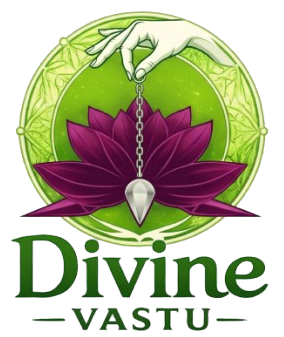

My Journey
With over 28 years of experience, I have helped individuals and families overcome life challenges through astrology, vastu, and spiritual guidance, bringing clarity, balance, and positive transformation into their lives.
About Me
I have a natural intuitive ability and dowsing power that helps me understand a person’s energy through their voice, behavior, and situation. I believe this is a divine gift, and I use it to guide people towards clarity, balance, and the right direction in life.
I believe that every person’s life is influenced by a combination of energy, environment, and planetary positions. With the right guidance, these can be aligned to bring positive transformation.
My vision is to help people live a life of clarity, balance, and positivity by guiding them through astrology, vastu, and intuitive insight.
I aim to make ancient spiritual practices simple, practical, and accessible for today's modern lifestyle.
"My goal is not just to guide you, but to help you transform your life."
My mission is to provide accurate guidance and personalized solutions that help individuals overcome life challenges and move towards success, stability, and inner peace.
Through my work, I focus on:
My Journey
A journey of learning, experience, and helping people find clarity and direction in life.
Started my journey with a deep interest in understanding life, energy, and spiritual sciences, guided by intuition and learning from traditional knowledge.
Over the years, I gained practical experience by guiding individuals and families in solving real-life problems related to career, relationships, and life decisions.
Through continuous study of astrology, vastu, and spiritual practices, I developed a deeper understanding and started providing more accurate guidance and remedies.
With time, I began guiding clients not only in India but also internationally, helping people from different backgrounds find clarity and balance in life.
Today, with over 28 years of experience, I continue to guide people with personalized solutions, focusing on practical results and positive transformation.
Guided many individuals and families over the years, helping them improve their life direction, decisions, and overall well-being.
Get one-to-one guidance through astrology, vastu, and intuitive insight to overcome your challenges and move in the right direction.
Trust & Experience
With over 28 years of experience, I have guided individuals and families in finding clarity, balance, and direction in life.